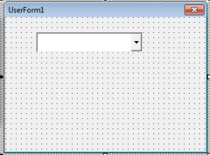
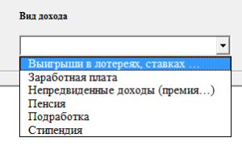
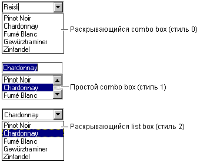
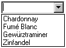
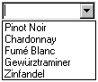

Элементы управления Combobox
Элементы управления combo box предоставляют пользователю список вариантов выбора. Если число элементов не умещается в окне combo box, на элементе управления автоматически появятся полосы прокрутки. Тогда пользователь сможет пролистать список вверх-вниз или слева направо.
рис . 1.1 Элемент управления Combobox на панели ToolBox

рис. 1.2 Элемент управления Combobox на форме

рис. 1.3 Пример элемента управления Combobox на форме
Когда используется combobox
Обычно combo box используется, когда есть список предложенных вариантов выбора, также combobox сохраняют место в форме. Поскольку полный список не отображается, пока пользователь не нажимает стрелку “вниз” (кроме Стиля 1, который всегда раскрыт), combobox может легко уместиться в маленьком пространстве, где список бы не поместился.
Особенности, связанные с данными
Visual Basic включает и стандартные, и связанные с данными версии элемента управления combobox. Обе версии позволяют отображать, редактировать и модифицировать информацию большинства стандартных типов баз данных, а связанный с данными combobox обеспечивает более продвинутые особенности доступа к данным. Связанный с данными элемент управления combo box поддерживает также иные свойства и методы, чем стандартный элемент управления.
Стили combo box
Есть три стиля поля со списком. Каждый стиль может быть установлен как во время разработки, так и во время выполнения, а для установки стиля combo box используются соответствующие значения или эквивалентные константы Visual Basic.
|
Стиль |
Значение |
Константа |
|
Раскрывающийся combo box |
0 |
vbComboDropDown |
|
Простой combo box |
1 |
vbComboSimple |
|
Раскрывающийся list box |
2 |
vbComboDropDownList |

Рис. 1.1 Стили combobox
Раскрывающийся combobox
С настройкой по умолчанию (Стиль = 0) combo box – раскрывающийся combo box. Пользователь может или непосредственно вводить текст (как в text box), или нажать стрелку справа от combo box, чтобы открыть список выбора.Выбранный вариант вставляется в верхнюю текстовую часть combo box. Пользователь может также открыть список, нажимая ALT + СТРЕЛКУ “ВНИЗ”, когда элемент управления имеет фокус.
Простой combobox
Установка свойства Style на 1 – определяет простой combobox, в котором список отображен всегда. Чтобы отобразить все входы в списке, вы должны протянуть достаточно большой список чтобы все входы отобразились. Когда входов больше, чем может отобразить список, автоматически вставляется вертикальная полоса прокрутки. Здесь также пользователь может как вводить текст непосредственно, так и выбирать из списка. Как и раскрывающийся combo box, простой combobox также позволяет пользователям выбирать варианты, которых нет в списке.
Добавление элементов
Чтобы добавить в combo box элементы, используйте метод AddItem, который имеет следующий синтаксис:
список.AddItem элемент[, индекс]
|
Аргумент |
Описание |
|
список |
Имя list box или combo box. |
|
элемент |
Строковое выражение, которое надо добавить в список. Если элемент – литеральная константа, включите его в кавычки. |
|
индекс |
Определяет, где новый элемент должен быть вставлен в список. Индекс 0 представляет первую позицию. Если индекс опущен, элемент вставляется в конец (или в порядке надлежащей сортировки). |
Если элементы списка обычно добавляются в процедуру события Form_Load, метод AddItem можно использовать в любое время. Это дает возможность динамически (в ответ на действия пользователя) добавлять элементы в список.
Следующий код размещает “Chardonnay”, “Fumé Blanc”, “Gewürztraminer” и “Zinfandel” в combo box с именем Combo1 с его свойством Style, установленным в 0 (vbComboDropDown):
Private Sub Form_Load ()
Combo1.AddItem “Chardonnay”
Combo1.AddItem “Fumé Blanc”
Combo1.AddItem “Gewürztraminer”
Combo1.AddItem “Zinfandel”
End Sub
Каждый раз, когда форма загружается во время выполнения и пользователь нажимает стрелку “вниз”, появляется список, показанный на рис. 1.2.

Рис. 1.2. Combobox “Список вин”
Добавление элементов во время разработки
Вы можете также вводить в список элементы во время разработки, установив свойство List в окне свойств элемента управления combobox. Когда вы выбираете опцию свойства List и затем нажимаете стрелку “вниз”, вы можете напечатать элементы списка, а затем нажать комбинацию клавиш CTRL+ENTER, чтобы запустить новую строку.
Добавлять элементы вы можете только в конец списка. А если затем вы хотите расположить список в алфавитном порядке, установите свойство Sorted в True.
Добавление элемента в указанную позицию
Чтобы добавить элемент в определенную позицию списка, определите значение индекса после нового элемента. Например, следующая строка программы вставляет “Pinot Noir” в первую позицию, смещая позиции других элементов вниз:
Combo1.AddItem “Pinot Noir”, 0
Обратите внимание, что первый элемент в списке определяется как 0, а не как 1 (см. рис. 1.3).

Рис. 1.3 Добавление элемента в список
Сортировка списка
Вы можете определить, чтобы элементы были добавлены в список в алфавитном порядке, установив свойство Sorted в True и опуская индекс. Сортировка не учитывает регистр; так что слова “chardonnay” и “Chardonnay” обрабатываются одинаково.
Когда свойство Sorted установлено в True, использование метода AddItem с аргументом index может привести к непредсказуемым, несортируемым результатам.
Удаление элементов
Для удаления элементов из поля со списком вы можете использовать метод RemoveItem. Он имеет один аргумент – index, который определяет элемент для удаления:
box.RemoveItem index
Поле и аргументы index такие же, как и для AddItem.
Например, чтобы удалить первый вход в списке, вы добавляете бы следующую строку программы:
Combo1.RemoveItem 0
Чтобы удалять все входы списка в поле со списком, используйте метод Clear:
Combo1.Clear
Получение содержания списка через свойство Text
Обычно самый простой способ получить значение выбранного в настоящее время элемента – использование свойства Text. Свойство Text соответствует тому, что введено в часть текстового поля элемента управления во время выполнения. Это может быть выбранный элемент списка или строка, которую пользователь вводит в текстовое поле.
Например, следующий код отобразит информацию о Chardonnay, если пользователь выберет “Chardonnay” из списка:
Private Sub Combo1_Click ()
If Combo1.Text = “Chardonnay” Then
Text1.Text = “Chardonnay – полусухое белое вино.”
End If
End Sub
Свойство Text содержит выбранный в настоящее время элемент в списке Combo1. Код проверяет, был ли выбран “Chardonnay” и если да, то отображает информацию в текстовом поле.
Доступ к элементам списка через свойство List
Свойство List обеспечивает доступ ко всем элементам списка. Это свойство содержит массив, в котором каждый элемент списка является также элементом массива. Каждый элемент представлен в форме строки. Чтобы обратиться к элементу списка, используйте следующий синтаксис:
box.List(index)
Аргумент box – ссылка на поле со списком, а index – позиция элемента. Верхний элемент имеет index 0, следующий – 1 и так далее. Например, следующая инструкция отображает третий элемент списка в текстовом поле (index = 2):
Text1.Text = Combo1.List(2)
Определение позиции через свойство ListIndex
Если вы хотите знать позицию выбранного элемента списка в combo box, используйте свойство ListIndex. Это свойство устанавливает или возвращает индекс элемента списка, выбранного в настоящее время в элементе управления, и доступна только во время выполнения. Установка свойства ListIndex для combo box также генерирует событие Click для элемента управления.
Если выбран первый (верхний) элемент, значение этого свойства – 0, если выбран следующий (второй) элемент – 1 и так далее. Если никакой элемент не выбран или если пользователь вводит в combo box (Стиль 0 или 1) свой вариант выбора вместо выбора существующего элемента списка, ListIndex = 1.
Примечание Свойство NewIndex позволяет следить за индексом последнего элемента, добавленного в список. Это может быть полезно при вставке элемента в сортируемый список.
Возвращение числа элементов через свойство ListCount
Чтобы возвратить число элементов в combo box, используйте свойство ListCount. Например, следующая инструкция использует свойство ListCount, чтобы определить число входов в combo box
Text1.Text = “У вас” & Combo1.ListCount & “входов”
Наиболее употребляемые из уникальных свойств элемента управления ComboBox.
|
DropButtonStyle |
Устанавливает вид раскрывающегося списка. Допустимые значения:
|
|
ListRows |
Устанавливает число элементов, отображаемых в раскрывающемся списке |
|
MatchRequired |
Допустимые значения:True (в поле ввода раскрывающегося списка нельзя ввести значения, отличные от перечисленных в списке, т.е. в поле со списком отключается функция поля ввода)False (в противном случае) |
|
MatchFound |
Допустимые значения:True (среди элементов раскрывающегося списка имеется элемент, совпадающий с вводимым в поле ввода раскрывающегося списка)False (в противном случае) |